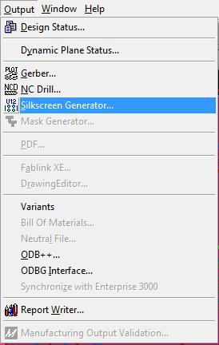
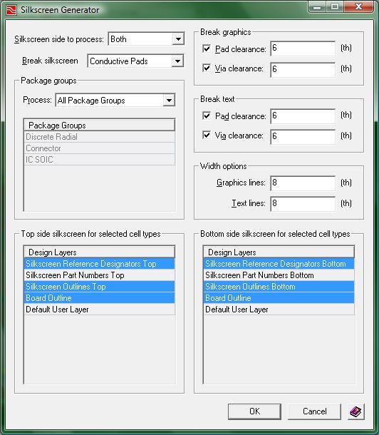

Silkscreen Generation:
After all of the parts have been placed and your board has been routed, this step will produce the silkscreen layer(s) for your board. You must run this generator in order that your board will have items showing up on the silkscreen. If you forget, no Ref-Des or any other silkscreen items will show up on your board.
NOTE: Every time you make any changes to your design you will need to run this generator again. This will ensure a perfect set of silkscreens that match the rest of your design layers .... ready to submit to the fabricator.
To open the silkscreen generator, click the menu Output -> Silkscreen Generator…

(1-output_menu.jpg)
The following "Silkscreen Generator" window will appear.

(2-silkscreen_generator.jpg)
Make sure to take a good look at the image above with a particular focus on the highlighted items appearing in the lower half. To produce silkscreens without error, the bottom two lists must have an appropriate set of options highlighted. If one or more options need to be changed (either highlighted or un-highlighted), use ctrl + left-mouse button click to toggle each of the ones that need to change. The lower left pane selects which virtual layers get included in the top-side silkscreen. The lower right pane does the same for the bottomside silkscreen. Note that not all designs need to create a bottomside silkscreen. This is an optional, extra cost fabrication option that is only needed if your design has components mounted on the bottomside of the board. If you get an error when you press "OK" (that's when the actual silkscreen generation process runs) it is likely because you are asking to make a bottomside silkscreen by including bottomside reference designators when, in fact, you don't have any. To fix this, just un-highlight the "Silkscreen Reference Designators Bottom" and the "Silkscreen Outlines Bottom" lines in the lower-right pane and push "OK" again.
When you are ready to generate your silkscreen, click the OK button at the bottom of the window and then you are finished!